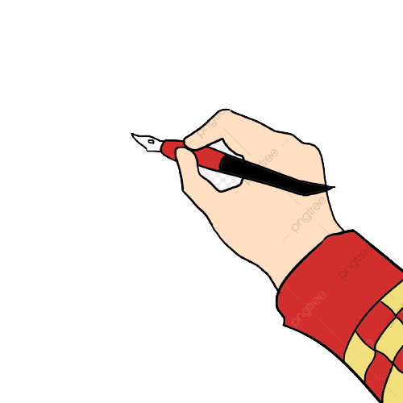

P R O J E C T S
Projects reflect the knowledge and capabilities of a person and
my capabilities are shown by the following projects.
GAMES:
In the course of this pandemic and online classes, I borrowed some time to invest in my coding skills. I developed a few cassic games like Ping Pong, Tic-Tac-Toe, Sprint Racers, Turtle Drawer, Snakes and Alien Invasion. This games have become a nice mind freshers for me.

Handwirtten Digit Detection:
Well making games cannot be enough, from this I used the knowledge of Machine Learning to develop a model which was able to identify handwritten digits. It helped me to expand my knowledge in the field of Artificial Intelligence and Machine Learning.
Masked Detection Software:
After my first software, I was attracted towards Artificial Intelligence. AI knowledge helped me to develop a Face Mask Detection Software which used the webcam to capture live footages and detect the presence of mask on a human face.>
Database System:
As my academics were also making me inspired. Thus, an IOT based software was what I developed. Improving my previous Face Mask Detection Software, I developed a software which on the absence of a face mask clicked a photo and saved it in a Database for future references. This has become a prime gem in my developed softwares list.
Advance Security System:
Last but not the least I would like to mention my Self-Developed Security System with Pyhton which uses voice inputted password and face detection to determine authorized users. This helped me in my academics as well as in my coding practices.